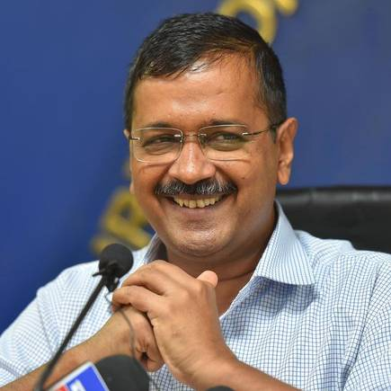

Over the last five decades, the journey of ISKCON has been one of selfless service to society.
The ISKCON family has emerged at the forefront of the quest to create a more peaceful, harmonious and compassionate society. ISKCON's journey has been a manifestation of 'Vasudhaiv Kutumbakam'. Integration has been at the core of your philosophy.
ISKCON's story has been the story of the determination and devotion of lakhs of devotees spread across the world. Inspired by the teachings of Lord Krishna, they spread His message far and wide. The efforts of the ISKCON family in sectors like education, publishing and disaster-relief are commendable.
The teachings of Shri Krishna in the Bhagavad Gita are a great source of inspiration to millions. His stress on gaining knowledge resonates with our current era where knowledge is given primacy. His message of maintaining equanimity in the face of successes and setbacks, is ever more relevant in this era of stressful lifestyles. His call to do our duties especially in serving others, is a guiding light for all of us.
Be it in taking these timeless values of the Bhagavad Gita to the world or in popularizing the spirit of devotion, organizations like the International Society for Krishna Consciousness, through their various chapters like the Moscow Society for Krishna Consciousness, have done yeoman service to humanity.
Message by Atal Bihari Vajpayee, Former Prime Minister of India
If the Bhagavad Gita is printed in millions of copies and scores of languages and distributed in all nooks and corners of the world, the credit for this great sacred service goes chiefly to ISKCON. For this accomplishment alone, Indians should be eternally grateful to the devoted spiritual army of Swami Prabhupada, the founder of the Hare Krishna Movement, and to his followers
The ISKCON movement has few parallels in the world in terms of its rapid global spread, its trans-national, trans-ethnic, and trans-professional appeal, its outward simplicity, and the devotional energy of its followers. It is a tribute to the resolute spirit of the followers of ISKCON, that they have sustained their presence all over the world for so many decades.
I understand the movement today encompasses more that 600 temples, 65 eco-farms and 110 vegetarian restaurants, 10 million visitors yearly; the world's largest publisher of Vaishnava literature having distributed 516 million books and magazines and the Annamrita Food Relief programme which feeds 1.2 million school children daily.

Message by Arvind Kejriwal, Chief Minister of Delhi
I hope that the celebrations will propagate spiritual knowledge to the society at large and educate them in the techniques of spiritual life. It will strengthen the spirit that real unity and peace in the world can be achieved through this deep compassion.
It is commendable that ISKCON is organizing a number of laudable initiatives during the pandemic of Covid-19 such as distributing food to the needy in collaboration with government and others social organizations. I offer my heartfelt congratulations for all your efforts towards the betterment of mankind. I am sure that ISKCON will continue to dedicate its life in serving humanity and empowering society.